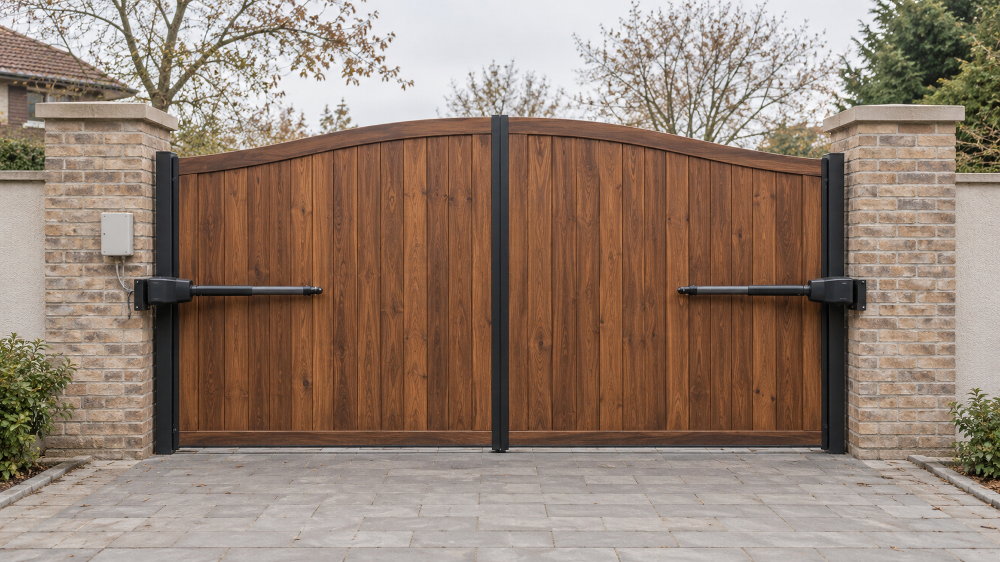
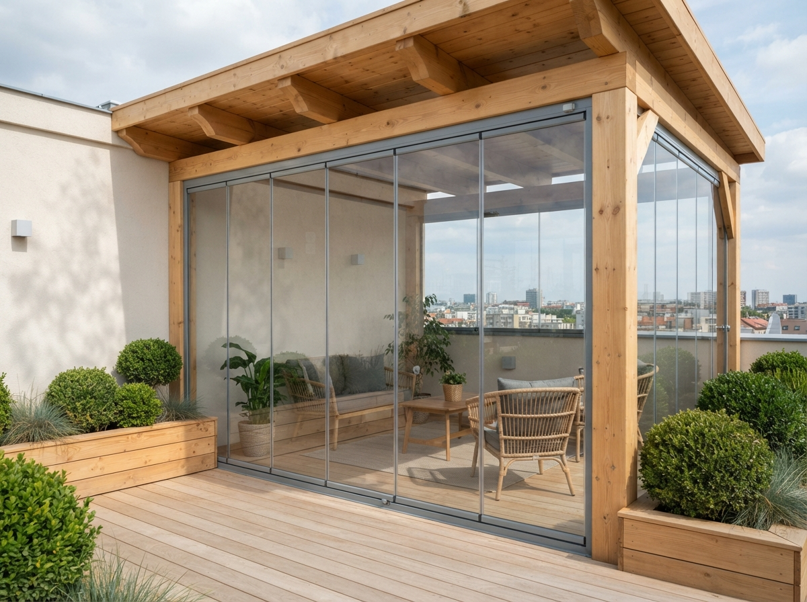
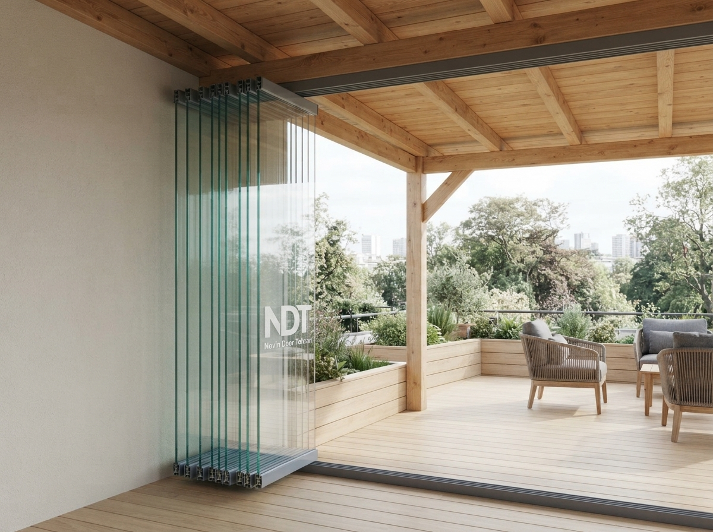

جکهای پارکینگی
اتوماسیون باز و بسته شدن دربهای لولایی تکلنگه و دولنگه در حیاط و پارکینگ.
- قابل نصب روی دربهای لولایی موجود
- دارای خلاصکن دستی برای زمان قطع برق
نصب، فروش، عیبیابی و سرویس دورهای هفت خانوادهٔ دربهای اتوماتیک و حفاظتی در تهران.

اتوماسیون باز و بسته شدن دربهای لولایی تکلنگه و دولنگه در حیاط و پارکینگ.

تردد بدون تماس و منظم در ورودی ساختمانهای اداری، تجاری، درمانی و مسکونی.

حفاظت از ورودی مغازه، انبار و پارکینگ با جمعشدن عمودی درون باکس بالایی.

مدیریت و محدودسازی تردد خودرو در ورودی مجتمعها، ادارات و پارکینگهای عمومی.

محصورسازی تراس و بالکن در برابر باد، گردوغبار و صدا بدون از دست رفتن دید.

بازشوی تاشوی چندلنگه برای دهانههای با عمق کم یا ارتفاع محدود.

حرکت نرم پنلهای عایق به زیر سقف پارکینگ، بدون نیاز به فضای بازشو در جلوی درب.